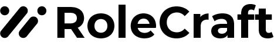
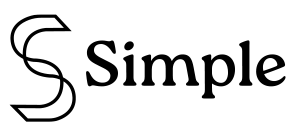

Aprendizagem digital
Plataformas, trilhas e conteúdos que ampliam o acesso e a consistência do aprendizado.
Um ecossistema de parceiros, especialistas e experiências criado para transformar desafios organizacionais em jornadas de aprendizagem, conexão e impacto.
Fale ConoscoAprendizagem. Experiência. Desenvolvimento.


O que é a Orquestrar Hub
Como a Orquestrar Hub funciona
Da escuta inicial à entrega final, conectamos parceiros,
formatos e metodologias para construir uma solução sob medida.
Alinhamos contexto, objetivos e resultados esperados.
Criamos um plano sob medida para o seu contexto.
Selecionamos especialistas e soluções alinhadas à jornada.
Coordenamos entregas com qualidade e consistência.
Acompanhamos resultados e evoluímos continuamente.
Soluções conectadas
Combinamos formatos, especialistas e metodologias para gerar aprendizado, engajamento e resultados sustentáveis.
Plataformas, trilhas e conteúdos que ampliam o acesso e a consistência do aprendizado.
Workshops, dinâmicas e processos para desenvolver pessoas, lideranças e times.
Vivências que conectam propósito, emoção e prática para gerar transformação real.
Produzimos conteúdos relevantes e personalizados para os seus desafios.
Soluções lúdicas para desenvolver competências e apoiar decisões estratégicas.
Integramos soluções e parceiros em jornadas completas com foco em resultados.
Vamos construir juntos
A Orquestrar HUB conecta parceiros, formatos e metodologias para desenhar jornadas personalizadas de aprendizagem, desenvolvimento e team building — com mais curadoria, integração e impacto.
Fale com a gente e descubra como conectar as soluções certas para a sua organização.
Fale Conosco